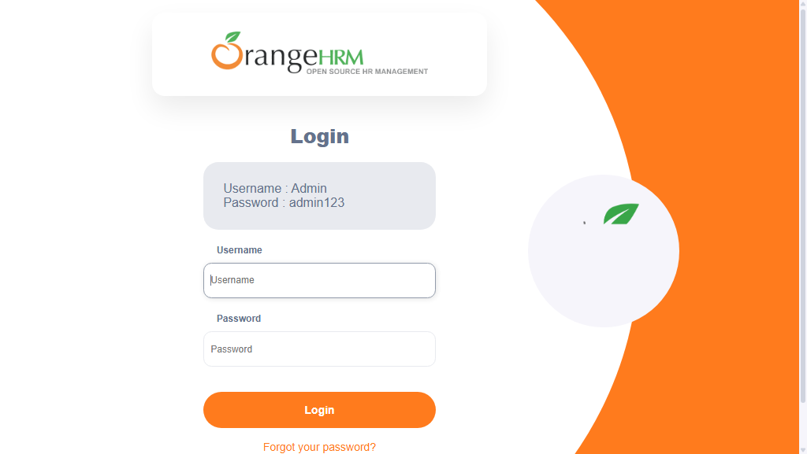

-
sampleTest3_user1_20-32-48
8:32:49 PM / 00:00:17:126 Fail
sampleTest3_user1_20-32-48
09.10.2026 8:32:49 PM 09.10.2026 8:33:06 PM 00:00:17:126 · #test-id=1Status Timestamp Details Skip 8:33:06 PM Test Skipped Fail 8:33:06 PM -
sampleTest1_user1_20-32-48
8:32:49 PM / 00:00:17:166 Fail
sampleTest1_user1_20-32-48
09.10.2026 8:32:49 PM 09.10.2026 8:33:06 PM 00:00:17:166 · #test-id=2Status Timestamp Details Skip 8:33:06 PM Test Skipped Fail 8:33:06 PM Info 8:33:06 PM 📂 Logs: Info 8:33:06 PM 📄 sampleTest1_user1_20-32-48.log -
sampleTest_user1_20-32-48
8:32:49 PM / 00:00:17:166 Fail
sampleTest_user1_20-32-48
09.10.2026 8:32:49 PM 09.10.2026 8:33:06 PM 00:00:17:166 · #test-id=4Status Timestamp Details Skip 8:33:06 PM Test Skipped Fail 8:33:06 PM Info 8:33:06 PM 📂 Logs: Info 8:33:06 PM 📄 sampleTest_user1_20-32-48.log -
sampleTest2_user1_20-32-48
8:32:49 PM / 00:00:17:126 Fail
sampleTest2_user1_20-32-48
09.10.2026 8:32:49 PM 09.10.2026 8:33:06 PM 00:00:17:126 · #test-id=3Status Timestamp Details Skip 8:33:06 PM Test Skipped Fail 8:33:06 PM -
sampleTest3_user1_20-33-14
8:33:14 PM / 00:00:24:114 Fail
sampleTest3_user1_20-33-14
09.10.2026 8:33:14 PM 09.10.2026 8:33:38 PM 00:00:24:114 · #test-id=5Status Timestamp Details Skip 8:33:38 PM Test Skipped Fail 8:33:38 PM -
sampleTest1_user1_20-33-14
8:33:14 PM / 00:00:23:834 Fail
sampleTest1_user1_20-33-14
09.10.2026 8:33:14 PM 09.10.2026 8:33:38 PM 00:00:23:834 · #test-id=6Status Timestamp Details Skip 8:33:38 PM Test Skipped Fail 8:33:38 PM Info 8:33:38 PM 📂 Logs: Info 8:33:38 PM 📄 sampleTest1_user1_20-33-14.log -
sampleTest2_user1_20-33-14
8:33:14 PM / 00:00:23:836 Fail
sampleTest2_user1_20-33-14
09.10.2026 8:33:14 PM 09.10.2026 8:33:38 PM 00:00:23:836 · #test-id=7Status Timestamp Details Skip 8:33:38 PM Test Skipped Fail 8:33:38 PM -
sampleTest_user1_20-33-14
8:33:14 PM / 00:00:23:630 Fail
sampleTest_user1_20-33-14
09.10.2026 8:33:14 PM 09.10.2026 8:33:37 PM 00:00:23:630 · #test-id=8Status Timestamp Details Skip 8:33:37 PM Test Skipped Fail 8:33:37 PM Info 8:33:37 PM 📂 Logs: Info 8:33:37 PM 📄 sampleTest_user1_20-33-14.log -
sampleTest_user1_20-33-44
8:33:44 PM / 00:00:24:378 Fail
sampleTest_user1_20-33-44
09.10.2026 8:33:44 PM 09.10.2026 8:34:09 PM 00:00:24:378 · #test-id=9Status Timestamp Details Fail 8:34:09 PM Info 8:34:09 PM 📂 Logs: Info 8:34:09 PM 📄 sampleTest_user1_20-33-44.log -
sampleTest2_user1_20-33-45
8:33:45 PM / 00:00:24:382 Fail
sampleTest2_user1_20-33-45
09.10.2026 8:33:45 PM 09.10.2026 8:34:09 PM 00:00:24:382 · #test-id=10Status Timestamp Details Fail 8:34:09 PM -
sampleTest1_user1_20-33-45
8:33:45 PM / 00:00:26:108 Fail
sampleTest1_user1_20-33-45
09.10.2026 8:33:45 PM 09.10.2026 8:34:11 PM 00:00:26:108 · #test-id=11Status Timestamp Details Fail 8:34:11 PM Info 8:34:11 PM 📂 Logs: Info 8:34:11 PM 📄 sampleTest1_user1_20-33-45.log -
sampleTest3_user1_20-33-45
8:33:45 PM / 00:00:24:086 Fail
sampleTest3_user1_20-33-45
09.10.2026 8:33:45 PM 09.10.2026 8:34:09 PM 00:00:24:086 · #test-id=12Status Timestamp Details Fail 8:34:09 PM -
sampleTest_user2_20-34-12
8:34:12 PM / 00:00:23:428 Fail
sampleTest_user2_20-34-12
09.10.2026 8:34:12 PM 09.10.2026 8:34:35 PM 00:00:23:428 · #test-id=13Status Timestamp Details Skip 8:34:35 PM Test Skipped Fail 8:34:35 PM Info 8:34:35 PM 📂 Logs: Info 8:34:35 PM 📄 sampleTest_user2_20-34-12.log -
sampleTest3_user2_20-34-14
8:34:14 PM / 00:00:24:183 Fail
sampleTest3_user2_20-34-14
09.10.2026 8:34:14 PM 09.10.2026 8:34:39 PM 00:00:24:183 · #test-id=14Status Timestamp Details Skip 8:34:39 PM Test Skipped Fail 8:34:39 PM -
sampleTest2_user2_20-34-15
8:34:15 PM / 00:00:23:911 Fail
sampleTest2_user2_20-34-15
09.10.2026 8:34:15 PM 09.10.2026 8:34:39 PM 00:00:23:911 · #test-id=15Status Timestamp Details Skip 8:34:39 PM Test Skipped Fail 8:34:39 PM -
sampleTest1_user2_20-34-21
8:34:21 PM / 00:00:17:109 Fail
sampleTest1_user2_20-34-21
09.10.2026 8:34:21 PM 09.10.2026 8:34:39 PM 00:00:17:109 · #test-id=16Status Timestamp Details Skip 8:34:39 PM Test Skipped Fail 8:34:39 PM Info 8:34:39 PM 📂 Logs: Info 8:34:39 PM 📄 sampleTest1_user2_20-34-21.log -
sampleTest_user2_20-34-36
8:34:36 PM / 00:00:25:257 Fail
sampleTest_user2_20-34-36
09.10.2026 8:34:36 PM 09.10.2026 8:35:02 PM 00:00:25:257 · #test-id=17Status Timestamp Details Skip 8:35:02 PM Test Skipped Fail 8:35:02 PM Info 8:35:02 PM 📂 Logs: Info 8:35:02 PM 📄 sampleTest_user2_20-34-36.log -
sampleTest2_user2_20-34-40
8:34:40 PM / 00:00:21:527 Fail
sampleTest2_user2_20-34-40
09.10.2026 8:34:40 PM 09.10.2026 8:35:01 PM 00:00:21:527 · #test-id=18Status Timestamp Details Skip 8:35:01 PM Test Skipped Fail 8:35:01 PM -
sampleTest3_user2_20-34-43
8:34:43 PM / 00:00:18:485 Fail
sampleTest3_user2_20-34-43
09.10.2026 8:34:43 PM 09.10.2026 8:35:02 PM 00:00:18:485 · #test-id=19Status Timestamp Details Skip 8:35:02 PM Test Skipped Fail 8:35:02 PM -
sampleTest1_user2_20-34-44
8:34:44 PM / 00:00:17:135 Fail
sampleTest1_user2_20-34-44
09.10.2026 8:34:44 PM 09.10.2026 8:35:01 PM 00:00:17:135 · #test-id=20Status Timestamp Details Skip 8:35:01 PM Test Skipped Fail 8:35:01 PM Info 8:35:01 PM 📂 Logs: Info 8:35:01 PM 📄 sampleTest1_user2_20-34-44.log -
sampleTest_user2_20-35-04
8:35:04 PM / 00:00:24:086 Fail
sampleTest_user2_20-35-04
09.10.2026 8:35:04 PM 09.10.2026 8:35:28 PM 00:00:24:086 · #test-id=21Status Timestamp Details Fail 8:35:28 PM Info 8:35:28 PM 📂 Logs: Info 8:35:28 PM 📄 sampleTest_user2_20-35-04.log -
sampleTest3_user2_20-35-04
8:35:04 PM / 00:00:23:638 Fail
sampleTest3_user2_20-35-04
09.10.2026 8:35:04 PM 09.10.2026 8:35:28 PM 00:00:23:638 · #test-id=22Status Timestamp Details Fail 8:35:28 PM -
sampleTest2_user2_20-35-06
8:35:06 PM / 00:00:21:689 Fail
sampleTest2_user2_20-35-06
09.10.2026 8:35:06 PM 09.10.2026 8:35:28 PM 00:00:21:689 · #test-id=23Status Timestamp Details Fail 8:35:28 PM -
sampleTest1_user2_20-35-08
8:35:08 PM / 00:00:19:772 Fail
sampleTest1_user2_20-35-08
09.10.2026 8:35:08 PM 09.10.2026 8:35:28 PM 00:00:19:772 · #test-id=24Status Timestamp Details Fail 8:35:28 PM Info 8:35:28 PM 📂 Logs: Info 8:35:28 PM 📄 sampleTest1_user2_20-35-08.log -
sampleTest4_user1_20-35-35
8:35:35 PM / 00:00:21:246 Fail
sampleTest4_user1_20-35-35
09.10.2026 8:35:35 PM 09.10.2026 8:35:57 PM 00:00:21:246 · #test-id=25Status Timestamp Details Skip 8:35:57 PM Test Skipped Fail 8:35:57 PM -
sampleTest5_user1_20-35-36
8:35:36 PM / 00:00:21:149 Fail
sampleTest5_user1_20-35-36
09.10.2026 8:35:36 PM 09.10.2026 8:35:57 PM 00:00:21:149 · #test-id=26Status Timestamp Details Skip 8:35:57 PM Test Skipped Fail 8:35:57 PM -
verifyLoginTest1_user1_20-35-37
8:35:37 PM / 00:00:20:601 Fail
verifyLoginTest1_user1_20-35-37
09.10.2026 8:35:37 PM 09.10.2026 8:35:57 PM 00:00:20:601 · #test-id=27Status Timestamp Details Skip 8:35:57 PM Test Skipped Fail 8:35:57 PM Info 8:35:57 PM 📸 Screenshots: Info 8:35:57 PM 
-
verifyLoginTest_{COL1=ONE}_20-35-39
8:35:39 PM / 00:00:17:419 Fail
verifyLoginTest_{COL1=ONE}_20-35-39
09.10.2026 8:35:39 PM 09.10.2026 8:35:57 PM 00:00:17:419 · #test-id=28Status Timestamp Details Skip 8:35:57 PM Test Skipped Fail 8:35:57 PM Info 8:35:57 PM 📂 Logs: Info 8:35:57 PM 📄 verifyLoginTest_{COL1=ONE}_20-35-39.log Info 8:35:57 PM 📸 Screenshots: Info 8:35:57 PM 
-
sampleTest4_user1_20-36-00
8:36:00 PM / 00:00:22:870 Fail
sampleTest4_user1_20-36-00
09.10.2026 8:36:00 PM 09.10.2026 8:36:23 PM 00:00:22:870 · #test-id=29Status Timestamp Details Skip 8:36:23 PM Test Skipped Fail 8:36:23 PM -
verifyLoginTest_{COL1=ONE}_20-36-00
8:36:00 PM / 00:00:24:716 Fail
verifyLoginTest_{COL1=ONE}_20-36-00
09.10.2026 8:36:00 PM 09.10.2026 8:36:25 PM 00:00:24:716 · #test-id=30Status Timestamp Details Skip 8:36:25 PM Test Skipped Fail 8:36:25 PM Info 8:36:25 PM 📂 Logs: Info 8:36:25 PM 📄 verifyLoginTest_{COL1=ONE}_20-36-00.log Info 8:36:25 PM 📸 Screenshots: Info 8:36:25 PM 
-
sampleTest5_user1_20-36-01
8:36:01 PM / 00:00:22:076 Fail
sampleTest5_user1_20-36-01
09.10.2026 8:36:01 PM 09.10.2026 8:36:23 PM 00:00:22:076 · #test-id=31Status Timestamp Details Skip 8:36:23 PM Test Skipped Fail 8:36:23 PM -
verifyLoginTest1_user1_20-36-06
8:36:06 PM / 00:00:18:603 Fail
verifyLoginTest1_user1_20-36-06
09.10.2026 8:36:06 PM 09.10.2026 8:36:24 PM 00:00:18:603 · #test-id=32Status Timestamp Details Skip 8:36:24 PM Test Skipped Fail 8:36:24 PM Info 8:36:24 PM 📸 Screenshots: Info 8:36:24 PM 
-
sampleTest5_user1_20-36-27
8:36:27 PM / 00:00:23:244 Fail
sampleTest5_user1_20-36-27
09.10.2026 8:36:27 PM 09.10.2026 8:36:50 PM 00:00:23:244 · #test-id=33Status Timestamp Details Fail 8:36:50 PM -
sampleTest4_user1_20-36-27
8:36:27 PM / 00:00:23:198 Fail
sampleTest4_user1_20-36-27
09.10.2026 8:36:27 PM 09.10.2026 8:36:50 PM 00:00:23:198 · #test-id=34Status Timestamp Details Fail 8:36:50 PM -
verifyLoginTest1_user1_20-36-31
8:36:31 PM / 00:00:19:434 Fail
verifyLoginTest1_user1_20-36-31
09.10.2026 8:36:31 PM 09.10.2026 8:36:50 PM 00:00:19:434 · #test-id=35Status Timestamp Details Fail 8:36:50 PM Info 8:36:50 PM 📸 Screenshots: Info 8:36:50 PM 
-
verifyLoginTest_{COL1=ONE}_20-36-32
8:36:32 PM / 00:00:18:178 Fail
verifyLoginTest_{COL1=ONE}_20-36-32
09.10.2026 8:36:32 PM 09.10.2026 8:36:50 PM 00:00:18:178 · #test-id=36Status Timestamp Details Fail 8:36:50 PM Info 8:36:50 PM 📂 Logs: Info 8:36:50 PM 📄 verifyLoginTest_{COL1=ONE}_20-36-32.log Info 8:36:50 PM 📸 Screenshots: Info 8:36:50 PM 
-
verifyLoginTest1_user2_20-36-53
8:36:53 PM / 00:00:25:168 Fail
verifyLoginTest1_user2_20-36-53
09.10.2026 8:36:53 PM 09.10.2026 8:37:18 PM 00:00:25:168 · #test-id=37Status Timestamp Details Skip 8:37:18 PM Test Skipped Fail 8:37:18 PM Info 8:37:18 PM 📸 Screenshots: Info 8:37:18 PM 
-
sampleTest5_user2_20-36-54
8:36:54 PM / 00:00:23:500 Fail
sampleTest5_user2_20-36-54
09.10.2026 8:36:54 PM 09.10.2026 8:37:17 PM 00:00:23:500 · #test-id=38Status Timestamp Details Skip 8:37:17 PM Test Skipped Fail 8:37:17 PM -
sampleTest4_user2_20-36-55
8:36:55 PM / 00:00:22:965 Fail
sampleTest4_user2_20-36-55
09.10.2026 8:36:55 PM 09.10.2026 8:37:17 PM 00:00:22:965 · #test-id=39Status Timestamp Details Skip 8:37:17 PM Test Skipped Fail 8:37:17 PM -
verifyLoginTest_{COL1=ONEONE}_20-36-55
8:36:55 PM / 00:00:22:189 Fail
verifyLoginTest_{COL1=ONEONE}_20-36-55
09.10.2026 8:36:55 PM 09.10.2026 8:37:17 PM 00:00:22:189 · #test-id=40Status Timestamp Details Skip 8:37:17 PM Test Skipped Fail 8:37:17 PM Info 8:37:17 PM 📂 Logs: Info 8:37:17 PM 📄 verifyLoginTest_{COL1=ONEONE}_20-36-55.log Info 8:37:17 PM 📸 Screenshots: Info 8:37:17 PM 
-
sampleTest5_user2_20-37-28
8:37:28 PM / 00:00:51:163 Fail
sampleTest5_user2_20-37-28
09.10.2026 8:37:28 PM 09.10.2026 8:38:19 PM 00:00:51:163 · #test-id=41Status Timestamp Details Skip 8:38:19 PM Test Skipped Fail 8:38:19 PM -
sampleTest4_user2_20-37-38
8:37:38 PM / 00:00:43:165 Fail
sampleTest4_user2_20-37-38
09.10.2026 8:37:38 PM 09.10.2026 8:38:21 PM 00:00:43:165 · #test-id=42Status Timestamp Details Skip 8:38:21 PM Test Skipped Fail 8:38:21 PM -
verifyLoginTest_{COL1=ONEONE}_20-37-38
8:37:38 PM / 00:00:45:446 Fail
verifyLoginTest_{COL1=ONEONE}_20-37-38
09.10.2026 8:37:38 PM 09.10.2026 8:38:24 PM 00:00:45:446 · #test-id=43Status Timestamp Details Skip 8:38:24 PM Test Skipped Fail 8:38:24 PM Info 8:38:24 PM 📂 Logs: Info 8:38:24 PM 📄 verifyLoginTest_{COL1=ONEONE}_20-37-38.log Info 8:38:24 PM 📸 Screenshots: Info 8:38:24 PM 
-
verifyLoginTest1_user2_20-38-03
8:38:03 PM / 00:00:20:497 Fail
verifyLoginTest1_user2_20-38-03
09.10.2026 8:38:03 PM 09.10.2026 8:38:23 PM 00:00:20:497 · #test-id=44Status Timestamp Details Skip 8:38:23 PM Test Skipped Fail 8:38:23 PM Info 8:38:23 PM 📸 Screenshots: Info 8:38:23 PM 
-
sampleTest5_user2_20-38-21
8:38:21 PM / 00:00:22:731 Fail
sampleTest5_user2_20-38-21
09.10.2026 8:38:21 PM 09.10.2026 8:38:44 PM 00:00:22:731 · #test-id=45Status Timestamp Details Fail 8:38:44 PM -
sampleTest4_user2_20-38-23
8:38:23 PM / 00:00:24:025 Fail
sampleTest4_user2_20-38-23
09.10.2026 8:38:23 PM 09.10.2026 8:38:47 PM 00:00:24:025 · #test-id=46Status Timestamp Details Fail 8:38:47 PM -
verifyLoginTest1_user2_20-38-26
8:38:26 PM / 00:00:20:914 Fail
verifyLoginTest1_user2_20-38-26
09.10.2026 8:38:26 PM 09.10.2026 8:38:47 PM 00:00:20:914 · #test-id=47Status Timestamp Details Fail 8:38:47 PM Info 8:38:47 PM 📸 Screenshots: Info 8:38:47 PM 
-
verifyLoginTest_{COL1=ONEONE}_20-38-30
8:38:30 PM / 00:00:17:295 Fail
verifyLoginTest_{COL1=ONEONE}_20-38-30
09.10.2026 8:38:30 PM 09.10.2026 8:38:47 PM 00:00:17:295 · #test-id=48Status Timestamp Details Fail 8:38:47 PM Info 8:38:47 PM 📂 Logs: Info 8:38:47 PM 📄 verifyLoginTest_{COL1=ONEONE}_20-38-30.log Info 8:38:47 PM 📸 Screenshots: Info 8:38:47 PM 
-
verifyLoginTest2_user1_20-38-47
8:38:47 PM / 00:00:13:183 Fail
verifyLoginTest2_user1_20-38-47
09.10.2026 8:38:47 PM 09.10.2026 8:39:00 PM 00:00:13:183 · #test-id=49Status Timestamp Details Skip 8:39:00 PM Test Skipped Fail 8:39:00 PM Info 8:39:00 PM 📂 Logs: Info 8:39:00 PM 📄 verifyLoginTest2_user1_20-38-47.log -
verifyLoginTest2_user1_20-39-01
8:39:01 PM / 00:00:13:631 Fail
verifyLoginTest2_user1_20-39-01
09.10.2026 8:39:01 PM 09.10.2026 8:39:15 PM 00:00:13:631 · #test-id=50Status Timestamp Details Skip 8:39:15 PM Test Skipped Fail 8:39:15 PM Info 8:39:15 PM 📂 Logs: Info 8:39:15 PM 📄 verifyLoginTest2_user1_20-39-01.log -
verifyLoginTest2_user1_20-39-16
8:39:16 PM / 00:00:13:312 Fail
verifyLoginTest2_user1_20-39-16
09.10.2026 8:39:16 PM 09.10.2026 8:39:29 PM 00:00:13:312 · #test-id=51Status Timestamp Details Fail 8:39:29 PM Info 8:39:29 PM 📂 Logs: Info 8:39:29 PM 📄 verifyLoginTest2_user1_20-39-16.log -
verifyLoginTest2_user2_20-39-33
8:39:33 PM / 00:00:15:312 Fail
verifyLoginTest2_user2_20-39-33
09.10.2026 8:39:33 PM 09.10.2026 8:39:48 PM 00:00:15:312 · #test-id=52Status Timestamp Details Skip 8:39:48 PM Test Skipped Fail 8:39:48 PM Info 8:39:48 PM 📂 Logs: Info 8:39:48 PM 📄 verifyLoginTest2_user2_20-39-33.log -
verifyLoginTest2_user2_20-39-49
8:39:49 PM / 00:00:13:082 Fail
verifyLoginTest2_user2_20-39-49
09.10.2026 8:39:49 PM 09.10.2026 8:40:02 PM 00:00:13:082 · #test-id=53Status Timestamp Details Skip 8:40:02 PM Test Skipped Fail 8:40:02 PM Info 8:40:02 PM 📂 Logs: Info 8:40:02 PM 📄 verifyLoginTest2_user2_20-39-49.log -
verifyLoginTest2_user2_20-40-05
8:40:05 PM / 00:00:12:868 Fail
verifyLoginTest2_user2_20-40-05
09.10.2026 8:40:05 PM 09.10.2026 8:40:17 PM 00:00:12:868 · #test-id=54Status Timestamp Details Fail 8:40:17 PM Info 8:40:17 PM 📂 Logs: Info 8:40:17 PM 📄 verifyLoginTest2_user2_20-40-05.log
-
org.openqa.selenium.TimeoutException
54 tests
org.openqa.selenium.TimeoutException
54 failed
Started
Sep 10, 2026 08:32:24 PM
Ended
Sep 10, 2026 08:40:18 PM
Tests Passed
0
Tests Failed
54
Tests
Log events
Timeline